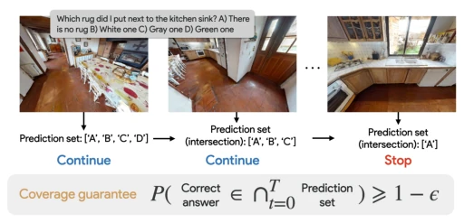
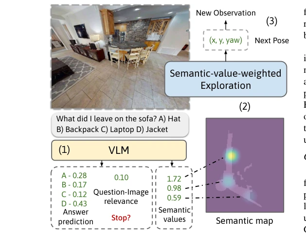
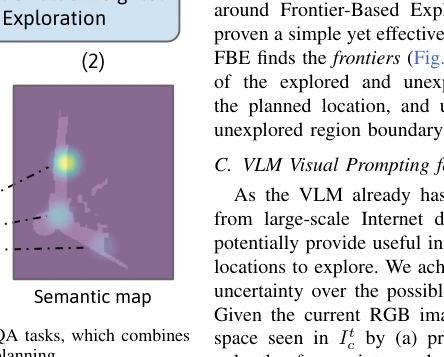
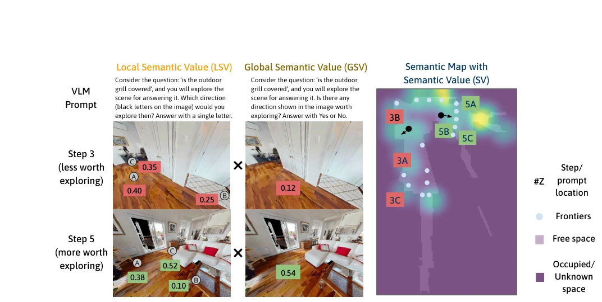
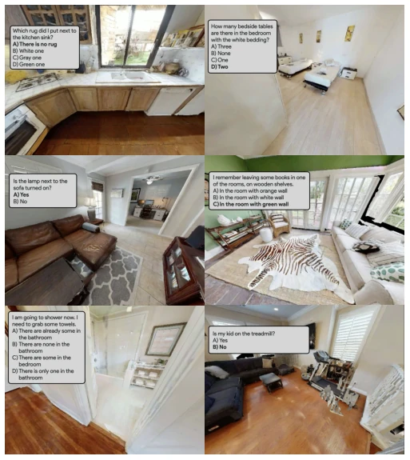
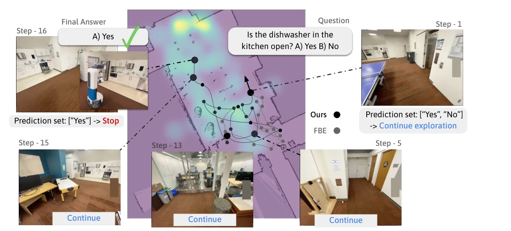
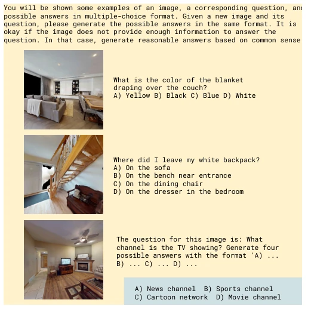
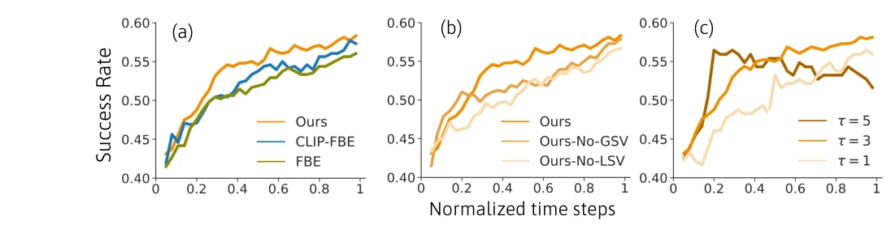
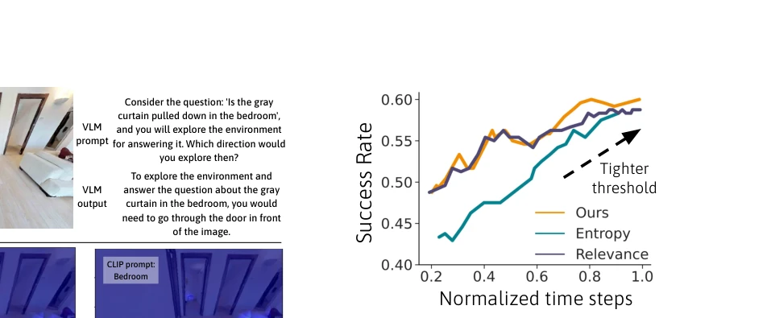
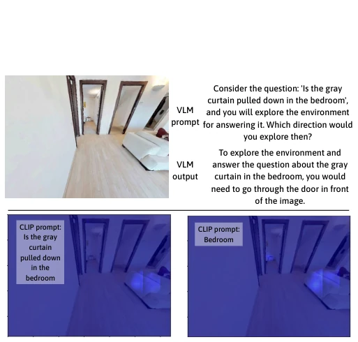

VLMs are like top students with poor memory; they can reason but cannot remember scenes. This paper adds an external brain (semantic map) and a strict examiner (conformal prediction) to the EQA task. Although using VLMs to guide exploration is smarter than pure geometric navigation, VLM hallucinations remain a fatal flaw; the 60% accuracy ceiling indicates that exploration is not the bottleneck, but rather model capability. Offloading memory to the map is clever, but do not expect VLMs to be always reliable. This work proves semantic navigation is effective, but does not solve the inherent defects of VLMs; it is like building a building on a sand pile—the building is stable, but the foundation is still shaky.
EQA requires robots to explore unknown 3D scenes and answer questions. Early work [1-5] relies on training from scratch, with poor generalization and simple scenes. Recent VLM methods [8, 14-17] often assume omniscience or ignore exploration. Key pain points: VLMs lack internal memory and cannot plan globally [1], and have poor confidence calibration [9], leading to premature stopping or ineffective roaming. It is necessary to combine VLM reasoning with uncertainty quantification. The HM-EQA dataset [12] provides more realistic scenes, but existing methods are still insufficient in efficiency and stopping criteria.

Fig. 4: For determining when to stop, we apply a principled approach based on multiple-step conformal prediction: at each step, a prediction set is generated, and the robot keeps the intersection of the sets until there is only one option remaining. The correct answer is guaranteed to be the remaining one with user-specified probability.
The framework consists of three steps: 1) Semantic Map: Combining TSDF geometry with VLM visual prompts to generate local (LSV) and global (GSV) semantic values, stored in an external map. 2) Exploration: Frontier planning based on semantic value weighting, prioritizing exploration of high-value regions. 3) Stopping: Multi-step conformal prediction (CP) maintains a prediction set, taking intersections until a single answer remains, ensuring coverage 1-ε, addressing VLM confidence bias. VLMs obtain direction probabilities via visual prompts (Fig 3), requiring no fine-tuning.

Fig. 2: Overview of our framework for EQA tasks, which combines a VLM and a external semantic map for planning.

Fig. 2 provides an overview of the full framework. Given the observation and the question, we first prompt a VLM to generate three different outputs: answer prediction prob- abilities over the four possible answers, the question-image relevance score relating how relevant the current view is for answering the question (Section V), and a set of semantic values (Section IV-C) indicating if any regions in the view are worth exploring for answering the question. These values are then stored in a semantic map external to the VLM, which also tracks free space and unknown regions. Then we apply semantic-value-weighted exploration based on the map (Section IV-D) that guides the robot exploring meaningful regions. The robot stops until it is confident about answering the question based on the answe

Fig. 3: To query VLM’s uncertainty over possible exploration locations, we visually prompt the VLM with possible points in the current view (left column) and also with the entire view (middle column) to obtain the Local Semantic Value (LSV) and Global Semantic Value (GSV) (Section IV-C). A weighted combination of them (SV) is saved in a semantic map (right column). The values are used as the weights for sampling the next frontier to navigate to, guiding the robot towards unknown and relevant regions (Section IV-D)

Fig. 5: Sample scenarios from the HM-EQA dataset. The images are the views used by the robot to determine the final answer in our experiments. The boxes show the questions with the true answers bolded.
Constructed the HM-EQA dataset (500 questions, HM3D scenes). Validated via simulation (Habitat) and real robot (Fetch). Baselines include FBE, CLIP-FBE, and entropy/correlation stopping criteria. Results show our method outperforms baselines in both steps and success rate (Fig 7, 9). Ablation studies indicate LSV/GSV are both essential. The 60% success rate is limited by VLM QA capability rather than exploration strategy. Fig 8 shows VLMs have more semantic reasoning capability than CLIP.

Fig. 1: Given a question about the scene (“Is the dishwasher in the kitchen open? A) Yes B) No”), our framework leverages a large vision- language model (VLM) to obtain semantic information from the views (visualized by overlaying it on top of the occupancy map), which guides a Fetch robot to explore relevant locations. Using such a semantic map helps robot explore more efficiently compared to Frontier-based exploration without using any semantic value (FBE, Section VII). The robot maintains a set of possible answers and stops when the set reduces to a single answer based on the current view. In this example, the robot is confident at Step 16 where it sees the open dishwasher not too far from its position. The robot paths (thin lines) are approximated.

Fig. 6: Prompt (yellow) and output (blue) of few-shot prompting GPT4-V to generate possible answers to the question given the view. The correct answer is ‘C) Cartoon network’. The actual prompt used has images encoded into a text form.

Fig. 7: Normalized time step taken vs. success rate in simulated experiments for (a) comparing different exploration methods, (b) ablating GSV and LSV from our method, and (c) varying semantic value temperature scaling. Ours improves exploration efficiency leveraging VLM reasoning.

Fig. 9: Normalized time step taken vs. success rate using varying threshold in Ours and the baselines, in simulated experiments. ϵ is varied from 0.27 to 0.99 (large value means higher confidence), ques- tion answering entropy threshold from 0.08 to 0.001 (smaller value means higher confidence), and question-image relevance threshold from 0.1 to 0.99 (large value means higher confidence).
其他图片Other Figures

Fig. 8: Top: Image, prompt, and output of the VLM. It can reason about exploring certain directions, in this case, through the door leading to the bedroom. Bottom: Multi-scale CLIP relevancy [54] of the full image. CLIP may fail to offer exploration signals when the view shows little information about the place of interest.